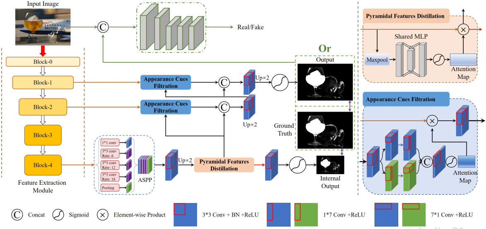
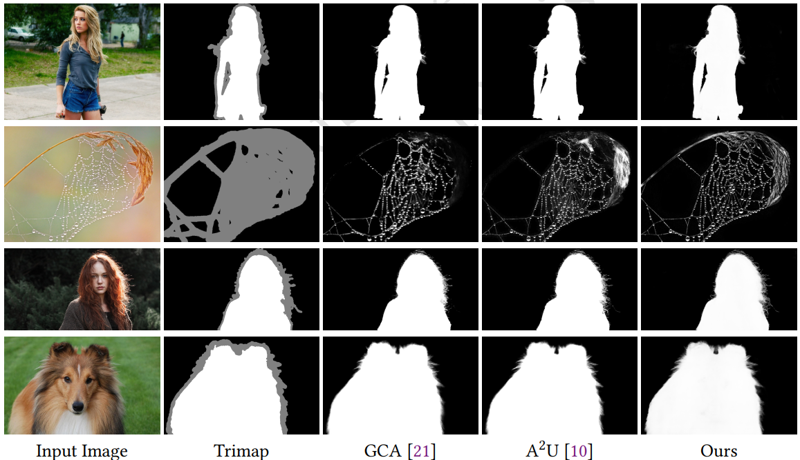

Abstract
Most matting researches resort to advanced semantics to achieve high-quality alpha mattes, and direct low-level features combination is usually explored to complement alpha details. However, we argue that appearance-agnostic integration can only provide biased foreground details and alpha mattes require differentlevel feature aggregation for better pixel-wise opacity perception. In this paper, we propose an end-to-end Hierarchical and Progressive Attention Matting Network (HAttMatting++), which can better predict the opacity of the foreground from single RGB images without additional input. Specifically, we utilize channel-wise attention to distill pyramidal features and employ spatial attention at different levels to filter appearance cues. This progressive attention mechanism can estimate alpha mattes from adaptive semantics and semanticsindicated boundaries. We also introduce a hybrid loss function fusing Structural SIMilarity (SSIM), Mean Square Error (MSE), Adversarial loss, and sentry supervision to guide the network to further improve the overall foreground structure. Besides, we construct a large-scale and challenging image matting dataset comprised of 59, 600 training images and 1000 test images (a total of 646 distinct foreground alpha mattes), which can further improve the robustness of our hierarchical and progressive aggregation model. Extensive experiments demonstrate that the proposed HAttMatting++ can capture sophisticated foreground structures and achieve state-of-the-art performance with single RGB images as input.
Method
Pipeline of our HAttMatting++. The orange box (Pyramidal Features Distillation) indicates channel-wise attention to distill pyramidal information extracted from ASPP [5]. The blue box (Appearance Cues Filtration) represents spatial attention to filter appearance cues, which are extracted from block1 and block2 in the feature extraction module.
Results on Natural Images

BibTex
@article{qiao2022hierarchical,
title={Hierarchical and Progressive Image Matting},
author={Qiao, Yu and Liu, Yuhao and Wei, Ziqi and Wang, Yuxin and Cai, Qiang and Zhang, Guofeng and Yang, Xin},
journal={ACM Transactions on Multimedia Computing, Communications, and Applications (TOMM)},
year={2022},
publisher={ACM New York, NY}
}